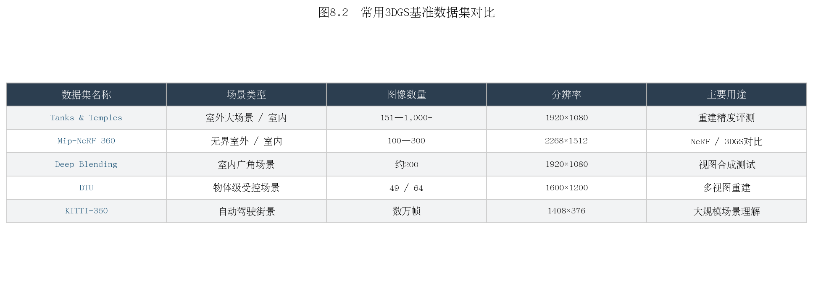
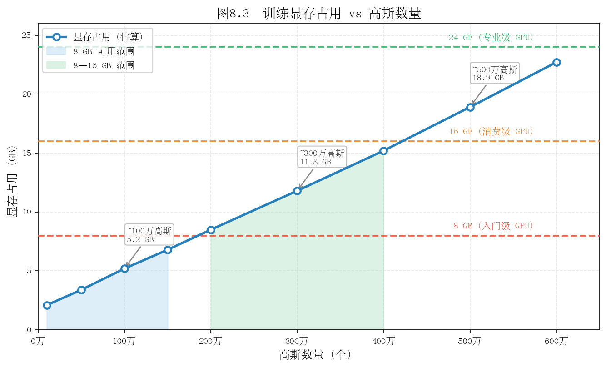
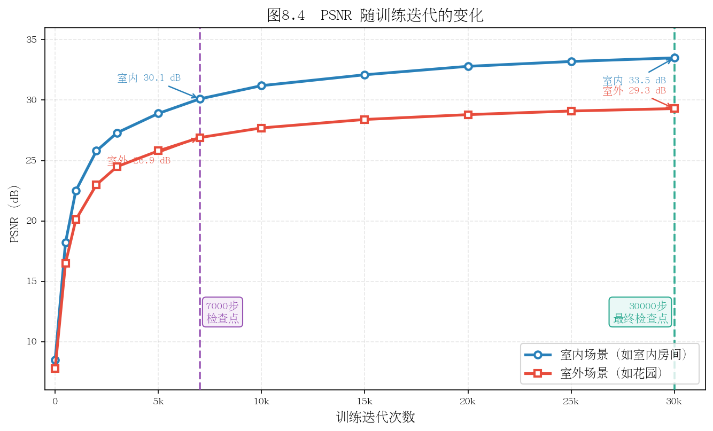

第八章：数据准备与训练实战
理论到实践的最后一跳：从自己的视频或公开数据集，到一个可实时渲染的3DGS场景。
8.1 硬件与环境配置
GPU 显存需求
3DGS 训练是显存密集型任务，主要消耗来自：高斯基元参数存储、中间渲染结果缓存、梯度缓冲区。
场景规模 |
建议显存 |
典型高斯数量 |
推荐GPU |
|---|---|---|---|
小场景/物体 |
8 GB |
<100万 |
RTX 3070/4060 Ti |
中等室内 |
16 GB |
100-300万 |
RTX 3080/4070 Ti |
复杂室外 |
24 GB |
300-600万 |
RTX 3090/4090 |
大场景 |
48 GB+ |
>600万 |
A6000/H100 |
显存不足时的降级策略（按效果损失排序）：
降低图像分辨率：
--resolution 2（1/4图像像素，最推荐）降低球谐阶数：
--sh_degree 1（降低颜色质量但减少参数）限制高斯上限：
--max_num_splats 1500000减小densify频率：
--densification_interval 300
CUDA 与依赖版本
3DGS 对版本有严格要求：
组件 |
推荐版本 |
说明 |
|---|---|---|
CUDA |
11.8 或 12.1 |
避免使用12.3+（部分编译问题） |
PyTorch |
2.0.x / 2.1.x |
与CUDA版本匹配 |
Python |
3.8 - 3.10 |
避免3.11+（部分依赖兼容性） |
GCC |
9 - 11 |
CUDA扩展编译需要 |
推荐安装流程（conda）：
conda create -n gs python=3.10 -y
conda activate gs
# 安装匹配CUDA版本的PyTorch
pip install torch torchvision --index-url https://download.pytorch.org/whl/cu118
# 克隆仓库并安装依赖
git clone https://github.com/graphdeco-inria/gaussian-splatting --recursive
cd gaussian-splatting
pip install -r requirements.txt
# 编译CUDA扩展（这一步最容易出错）
pip install submodules/diff-gaussian-rasterization
pip install submodules/simple-knn
验证安装：
python -c "import diff_gaussian_rasterization; print('CUDA扩展安装成功')"
Docker 快速启动（推荐）：
docker pull nerfstudio/nerfstudio:latest
# 或使用 gsplat 的官方镜像
docker run --gpus all -v /your/data:/data nerfstudio/nerfstudio
思考题：为什么 3DGS 的 CUDA 扩展需要本地编译，而不能直接 pip install gaussian-splatting？编译过程依赖了哪些本机环境信息？
8.2 公开数据集下载与使用
Tanks and Temples
经典室外重建基准数据集，包含12个真实室内外场景。
下载：
# 官方下载（需注册）
wget https://storage.googleapis.com/tanks-and-temples/TanksAndTemples.zip
场景列表：Truck、Train（室外）；Barn、Caterpillar、Ignatius（室外大场景）；Family（室内）等。
特点： 场景复杂，有植被、金属、玻璃，覆盖各种材质挑战；是论文对比中最常用的基准。
Mip-NeRF 360 数据集
9个场景（5个室外、4个室内），每个场景包含数百张图像，相机绕场景360度环绕。
下载：
# 室外场景（garden, bicycle, bonsai等）
wget http://storage.googleapis.com/gresearch/refraw360/360_v2.zip
# 室内场景（room, kitchen, counter等）
wget http://storage.googleapis.com/gresearch/refraw360/360_extra_scenes.zip
特点： 360度环绕拍摄，测试无界场景重建能力；室内/室外差异大，是最全面的NVS基准。
数据集对比

数据集 |
场景类型 |
图像数量 |
分辨率 |
主要用途 |
|---|---|---|---|---|
Tanks & Temples |
室内外混合 |
150-400 |
1920×1080 |
重建质量评估 |
Mip-NeRF 360 |
室内+室外 |
100-300 |
1280×720 |
NVS全面评估 |
Deep Blending |
室内 |
50-100 |
1920×1080 |
复杂光照测试 |
DTU |
物体级别 |
49/64 |
1600×1200 |
精确几何评估 |
KITTI-360 |
城市街道 |
数万 |
1408×376 |
自动驾驶场景 |
思考题：Mip-NeRF 360数据集要求相机360度环绕拍摄。如果只有半圆弧的拍摄角度，另一半没有训练图像，3DGS会如何处理这种"未观测区域"？
8.3 用自己的视频训练
拍摄技巧
好的输入数据是高质量重建的前提。以下是关键拍摄原则：

必须做的：
重叠率 >60%：相邻帧之间至少60%的内容相同，确保SfM能找到足够匹配点
多角度覆盖：从不同高度和角度拍摄，避免只有单一水平环绕
慢速移动：保持摄像头稳定，避免运动模糊
固定曝光：关闭自动曝光，防止不同帧亮度差异大
不要做的：
纯旋转（只转不移）：SfM无法准确估计相机位移
急速晃动：导致模糊帧
在场景中走动（训练期间）：训练图像中出现人物会导致"幽灵"
拍摄纯色区域（白墙、天花板）：COLMAP无法在这些区域找到特征点
视频抽帧
# 用ffmpeg按帧率抽帧（每秒2帧）
ffmpeg -i input_video.mp4 -vf fps=2 images/%04d.jpg
# 如果视频较短，可以抽全帧
ffmpeg -i input_video.mp4 images/%04d.jpg
# 检查图像数量
ls images/ | wc -l
**建议图像数量：**100-500张（太少覆盖不足，太多COLMAP很慢）
COLMAP 自动重建流程
# 自动模式（推荐，GPU加速）
colmap automatic_reconstructor \
--workspace_path ./colmap_workspace \
--image_path ./images \
--camera_model OPENCV \
--use_gpu 1 \
--quality high
# 将结果转换为3DGS期望的格式
cp -r colmap_workspace/sparse ./sparse
检查重建质量：
# 查看注册图像数量和重投影误差
colmap model_analyzer --input_path sparse/0
输出示例：
Cameras: 156
Images: 156 (registered: 153) ← 注册率 98%，很好
Points: 28456
Mean reprojection error: 0.891 px ← <1.5px，很好
如果注册率 < 80% 或重投影误差 > 2px，建议重新拍摄。
思考题：COLMAP 的全自动重建会根据图像数量自动选择特征提取算法（SIFT vs 深度学习特征）。对于光线较暗的室内场景，SIFT 的效果如何？有什么替代方案？
8.4 训练参数精调
不同场景的推荐配置
室内场景（房间、实验室）：
python train.py \
-s data/room \
--model_path output/room \
--iterations 30000 \
--densify_until_iter 15000 \
--densify_grad_threshold 0.0002
室外场景（建筑、庭院）：
python train.py \
-s data/garden \
--model_path output/garden \
--iterations 30000 \
--white_background \ # 室外建议白色背景
--densify_until_iter 15000
小物体（产品、文物）：
python train.py \
-s data/object \
--model_path output/object \
--iterations 30000 \
--sh_degree 3 \
--densify_grad_threshold 0.0001 # 更激进的密度控制
快速实验策略
迭代优化时，先用7000步快速验证：
# 快速验证（约5-10分钟）
python train.py -s data/scene --iterations 7000 --model_path output/quick_test
# 快速查看效果
python render.py -m output/quick_test --skip_train
python metrics.py -m output/quick_test
7000步时PSNR通常已达到最终结果的90%，可以快速判断数据质量和参数是否合适。
关键超参数影响
参数 |
默认值 |
增大效果 |
减小效果 |
|---|---|---|---|
|
0.0002 |
高斯数量减少（欠拟合） |
高斯数量增多（可能过拟合） |
|
0.005 |
更激进剪枝（高斯数少） |
保留更多"虚弱"高斯 |
|
0.00016 |
高斯移动更快（不稳定） |
移动更慢（收敛慢） |
|
0.2 |
更注重结构（可能不稳定） |
更注重像素精度 |
思考题：densify_until_iter=15000 的意思是15000步之后不再做ADC（只做剪枝）。为什么不一直做ADC到训练结束？
8.5 可视化与结果分析
SIBR Viewer 实时查看
SIBR (Simple Image-Based Renderer) 是官方提供的实时渲染查看器。
# 安装
cd SIBR_viewers
cmake . -DCMAKE_BUILD_TYPE=Release
make -j8
# 运行
./SIBR_gaussianViewer_app -m output/room/
操作方式：鼠标左键拖动视角，滚轮缩放，右键平移。
如果没有SIBR，可以用三方可视化工具：
SuperSplat（网页版）：supersplat.app — 直接拖入
.ply文件在线查看Polycam：支持 Gaussian Splatting 文件查看
Unity/Unreal：有3DGS插件可直接导入渲染
Python 轨迹渲染
如果想生成一段"飞行穿越"视频，可以定义相机轨迹并逐帧渲染：
# 定义圆形环绕轨迹，然后渲染每帧
from scene.cameras import Camera
import numpy as np
# 生成环绕轨迹
thetas = np.linspace(0, 2*np.pi, 120) # 120帧
for i, theta in enumerate(thetas):
R = rotation_matrix_from_angle(theta)
t = [np.cos(theta)*2, 0, np.sin(theta)*2]
cam = Camera(R=R, t=t, FoVx=fov, ...)
img = render(cam, gaussians, ...)["render"]
save_image(img, f"frames/{i:04d}.png")
# 合成视频
os.system("ffmpeg -r 24 -i frames/%04d.png output.mp4")
训练指标监控
在训练时加入 Wandb 记录（需安装 pip install wandb）：
# train.py 中已有 TensorBoard 支持，可通过以下命令查看
tensorboard --logdir output/room/


思考题：训练完成后，你发现场景中某个区域（比如窗帘）效果很差，高斯基元分布稀疏。不重新训练，有什么方法可以改善这个区域的质量？（提示：局部优化、添加更多该区域的训练图像）
8.6 导出与部署
PLY 文件格式
训练输出是一个 .ply 文件，包含所有高斯基元的参数。PLY是一种简单的3D点云格式，原版 .ply 文件中每个点包含 59 个属性（位置、旋转、缩放、不透明度、球谐系数）。
PLY 文件结构（头部示例）：
ply
format binary_little_endian 1.0
element vertex 3245678 ← 高斯数量
property float x
property float y
property float z
property float nx
...
property float f_dc_0 ← 球谐系数（直流分量）
property float f_dc_1
...
property float f_rest_0 ← 高阶球谐系数
...
property float opacity ← 不透明度（logit空间）
property float scale_0 ← 缩放（log空间）
...
property float rot_0 ← 旋转四元数
...
end_header
WebGL / 浏览器端部署
SuperSplat 和 3DGS.live 等工具支持将 .ply 转换为网页可用格式：
在 SuperSplat 中打开
.ply文件，并优化（压缩、剔除）导出为
.splat格式（更紧凑的自定义格式）嵌入网页（使用 three.js + gaussian-splatting-three 库）
<!-- 示例：在网页中嵌入3DGS场景 -->
<script src="https://cdn.jsdelivr.net/npm/three@0.155.0/build/three.min.js"></script>
<script src="gaussian-splatting.js"></script>
<script>
const viewer = new GaussianSplatViewer({
container: document.getElementById('canvas'),
splatPath: 'scene.splat'
});
</script>
移动端适配
移动端（iOS/Android）性能有限，建议：
压缩高斯数量：使用 LightGaussian 或 Mini-Splatting 将高斯从300万压缩到50万以内
降低球谐阶数：从3阶降到1阶，参数量减少75%
使用移动端专用渲染器：Luma AI 的 iOS SDK，或 GSPLAT.js 的移动端优化版本
gsplat 库的 Python API
gsplat 是 Nerfstudio 团队开发的3DGS高性能后端，API更简洁，适合自定义开发：
from gsplat import rasterization
# 核心API：将高斯基元光栅化为图像
renders, alphas, info = rasterization(
means=gaussians_xyz, # [N, 3] 高斯位置
quats=gaussians_quats, # [N, 4] 旋转四元数
scales=gaussians_scales, # [N, 3] 缩放
opacities=gaussians_opacities, # [N]
colors=gaussians_colors, # [N, C]
viewmats=viewmats, # [B, 4, 4]
Ks=Ks, # [B, 3, 3]
width=W, height=H,
)
思考题：将3DGS部署到网页端时，.ply 文件通常需要通过网络下载（可能数百MB），用户体验差。有哪些技术手段可以实现"边下载边渲染"的流式加载？
本章小结
硬件：24GB显存（RTX 4090）可处理大多数场景；显存不足时优先降分辨率
公开数据集：Mip-NeRF 360 和 Tanks and Temples 是最常用基准；下载链接见正文
自拍视频：重叠率>60%、多角度、固定曝光；ffmpeg抽帧后用COLMAP自动重建
训练：7000步快速验证，满意后跑30000步完整训练；不同场景有不同推荐参数
部署：SIBR Viewer实时查看；SuperSplat导出网页格式；gsplat提供更简洁的Python API
推荐阅读
nerfstudio 文档：包含 Splatfacto（3DGS in nerfstudio）的完整使用说明
gsplat 文档：API参考和自定义扩展指南
COLMAP 官方文档：colmap.github.io
上一章：第七章：从原始论文到开源代码 | 下一章：第九章：主流改进方向与前沿论文（截至 2026 年中）